Capítulo 12. Visualización de datos con ggplot2
▶ Ejecutar este capítulo en Binder
La primera vez que se abre, Binder construye el entorno en la nube (unos 10-20 min); verás una pantalla de progreso. Después queda en caché y abre en segundos. Si parece que no responde, espera a que termine de construirse o vuelve a intentarlo.
Si hay un capítulo en el que R no compite, sino que gana, es este. La visualización de datos tiene en R su expresión más pura: la gramática de gráficos (Wilkinson 2005) —la teoría de que cualquier gráfico se compone de unas pocas piezas combinables— no es en R una biblioteca más, sino ggplot2, la herramienta canónica escrita por Hadley Wickham como implementación directa de esa teoría (Wickham 2010; Wickham et al. 2025). Donde otros lenguajes ofrecen una colección de funciones para dibujar cada tipo de gráfico, R ofrece una gramática para construir cualquiera a partir de sus elementos. Aprenderla no es memorizar recetas —una para barras, otra para líneas—; es entender un sistema, y con él dibujar lo que aún no se ha inventado.
El capítulo va de lo conceptual a lo práctico. Primero, por qué dibujar: el ojo capta lo que los resúmenes esconden (§12.1). Después, los principios que gobiernan un buen gráfico —qué percibe el ojo humano y cómo no mentir con él (§12.2)—, independientes de la herramienta. Luego el corazón: la gramática de gráficos y su encarnación en ggplot2 (§12.3), con un rodeo breve por los gráficos base de R como contraste histórico (§12.4). El grueso son los tipos de gráfico según la pregunta —comparar (§12.5), ver una distribución (§12.6), relacionar (§12.7), y multiplicar en facetas (§12.8)—, seguidos del acabado: escalas y color (§12.9), y el salto del gráfico exploratorio al de presentación (§12.10). Cierran la interactividad y las tablas (§12.11) y un integrador. Todas las figuras del capítulo son ggplot2 de verdad, generadas por src/cap12_visualizacion.R sobre la rebanada de seis géneros del catálogo —no imitaciones dibujadas a mano, sino la salida real de la herramienta que el capítulo enseña—.
Una nota sobre el lugar de este capítulo en el arco del libro. La visualización aparece aquí, tras la limpieza (cap. 10) y la estadística (cap. 11), pero en la práctica no es un paso posterior: acompaña a todos. Se dibuja al validar, para ver la forma de una variable antes de contratarla; se dibuja al inferir, porque un gráfico revela lo que un contraste solo confirma; se dibujará al modelar, para diagnosticar un ajuste. Situarla en su propio capítulo es una comodidad expositiva, no una secuencia temporal: en el trabajo real, la visualización es un hilo continuo que atraviesa todas las etapas, la forma más rápida de mirar que tenemos en cada una de ellas. Que R haga ese mirar tan fluido —tres líneas para cualquier gráfico— es, quizá, su mayor regalo al oficio.
Por qué dibujar: lo que los números esconden
El argumento para visualizar cabe en una imagen: el cuarteto de Anscombe (Anscombe 1973), cuatro conjuntos de datos que comparten casi todos sus estadísticos —la misma media en \(x\) y en \(y\), la misma varianza, la misma correlación (\(0{,}82\)), la misma recta de regresión— y que, sin embargo, no se parecen en nada (figura 12.1). Uno es una relación lineal limpia; otro, una curva; el tercero, una recta perfecta arruinada por un solo atípico; el cuarto, una columna vertical con un punto suelto que inventa la pendiente. Los números los declaran idénticos; el ojo los distingue al instante.
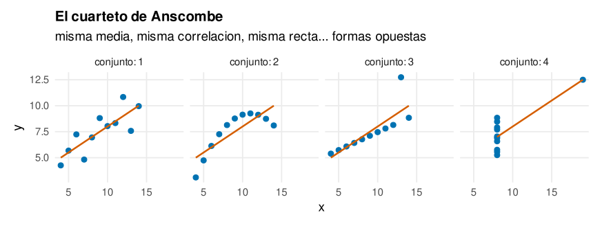
La lección se ha reforzado con casos más espectaculares —el «datasaurio» de Matejka y Fitzmaurice (2017), una docena de nubes de puntos con estadísticos idénticos entre las que hay un dinosaurio dibujado—, pero Anscombe basta: un resumen es una compresión con pérdida, y lo que pierde puede ser justo lo que importaba. La visualización no es el adorno que se pone al final de un análisis para comunicar sus conclusiones; es una herramienta del propio análisis, la que revela la forma, el atípico, el patrón inesperado que ningún estadístico habría delatado. Por eso el orden de trabajo de todo este libro empieza por mirar: describir, dibujar y solo después inferir.
La visualización cumple, de hecho, dos funciones distintas que conviene no confundir, porque piden gráficos distintos. La primera es descubrir: mirar los datos para entenderlos uno mismo, encontrar la forma, el atípico, la relación que no se sospechaba. La segunda es comunicar: enseñar a otros una conclusión ya hallada, con la claridad y la honradez que merece. Anscombe ilustra la primera —dibujar para no dejarse engañar por los resúmenes—; la última sección del capítulo, la segunda. Son dos oficios con principios comunes pero prioridades opuestas: el gráfico exploratorio prima la velocidad y la fidelidad al dato crudo, aunque sea feo; el de comunicación prima la claridad del mensaje, aunque cueste pulirlo. Un buen analista domina los dos y sabe en cuál está en cada momento, porque aplicar los criterios de uno al otro —perder tiempo puliendo un gráfico exploratorio, o publicar uno de comunicación sin pulir— es malgastar el esfuerzo donde no toca.
Conviene entender por qué un resumen puede engañar tanto, porque la razón es estructural y no una curiosidad de Anscombe. Un estadístico —la media, la desviación, la correlación— es una proyección: toma un conjunto de muchos números y lo aplasta en uno solo, y como toda proyección, descarta dimensiones. La media descarta la forma; la desviación, la simetría; la correlación, todo lo que no sea la tendencia lineal. Dos conjuntos que coinciden en esos pocos números pueden diferir en todo lo que los números no miran, y ese «todo lo demás» es enorme: es infinito, de hecho, porque hay infinitas nubes de puntos con la misma media y la misma correlación. Anscombe y el datasaurio no son accidentes ingeniosos, sino ilustraciones de una verdad inevitable: reducir muchos números a unos pocos siempre pierde información, y no hay resumen, por astuto que sea, que escape a esa pérdida. La única defensa es no reducir del todo —mirar los datos con un gráfico, que conserva las dimensiones que el estadístico tira—, y por eso el gráfico no compite con el resumen sino que lo completa: el número dice «cuánto» en una cifra manejable, el gráfico dice «de qué forma» sin comprimir. Usar solo el primero es confiar en una sombra; usar solo el segundo, renunciar a la precisión. El análisis honesto usa los dos, y en ese orden: dibuja para ver la forma, resume para medirla.
Principios: qué percibe el ojo y cómo no mentirle
Antes de una sola línea de ggplot2 conviene fijar dos principios que ninguna herramienta impone y que separan un gráfico que ilumina de uno que confunde. Son independientes de la herramienta: valen para R igual que para el papel milimetrado.
La jerarquía perceptual
No todas las formas de codificar un número se leen igual de bien. Cleveland y McGill lo midieron experimentalmente (Cleveland y McGill 1984; Cleveland 1994) y ordenaron las codificaciones por la precisión con que el ojo las descifra: la más precisa es la posición sobre una escala común (donde caen los puntos de un diagrama de dispersión o las cimas de unas barras alineadas); luego la longitud (barras); después el ángulo y la pendiente; y al final, las peores, el área, el volumen y el color. La consecuencia práctica es directa y a menudo ignorada: el gráfico de tarta —que codifica con ángulos y áreas, las peores— es casi siempre inferior a unas barras que codifican con posición y longitud. Comparar dos porciones de tarta es difícil; comparar dos barras alineadas, trivial. La regla que se deriva: para que un número se lea con precisión, codifíquelo con posición o longitud, y reserve el color y el área para lo secundario o lo categórico. Todo el diseño de un buen gráfico es, en el fondo, asignar las variables importantes a las codificaciones que el ojo lee mejor.
La figura 12.2 pone las mismas cifras —el número de pistas de cada género— en las dos codificaciones extremas: barras (posición y longitud) y tarta (ángulo y área). En las barras, el orden se lee al instante y las diferencias son evidentes; en la tarta, hay que girar la cabeza para comparar porciones parecidas, y sin las etiquetas numéricas sería imposible ordenarlas. No es cuestión de gusto: es que el aparato visual humano estima longitudes con precisión y ángulos con torpeza, un hecho medido, no opinado. De ahí la mala fama —merecida— de la tarta, y de las variantes que agravan el problema (la tarta en 3D, la rosquilla, el mapa de burbujas cuando bastarían barras).
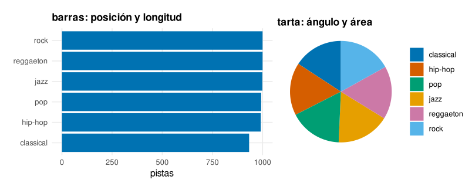
La honestidad: el factor de mentira
Un gráfico puede decir la verdad de los datos y aun así mentir con la vista. La forma más común es el eje truncado: empezar el eje vertical de unas barras no en cero, sino justo debajo del valor más bajo, para que diferencias minúsculas parezcan abismales (figura 12.3). Tufte lo bautizó factor de mentira (Tufte 2001), y lo definió como una división: cuánto de grande se ve la diferencia en el papel, partido por cuánto de grande es en realidad. Cuando ese cociente vale uno, el dibujo es fiel; cuando se dispara muy por encima, engaña. La regla de las barras es tajante —su eje empieza en cero, siempre, porque la barra codifica magnitud por su longitud y truncarla falsea esa longitud—. Otras deshonestidades habituales: ejes con escalas distintas comparados como si fueran iguales, áreas que crecen con el cuadrado de lo que representan, colores que sugieren un orden que no existe. La honradez gráfica es la misma que la estadística del cap. 11: mostrar el efecto tal como es, sin exagerarlo ni esconderlo.
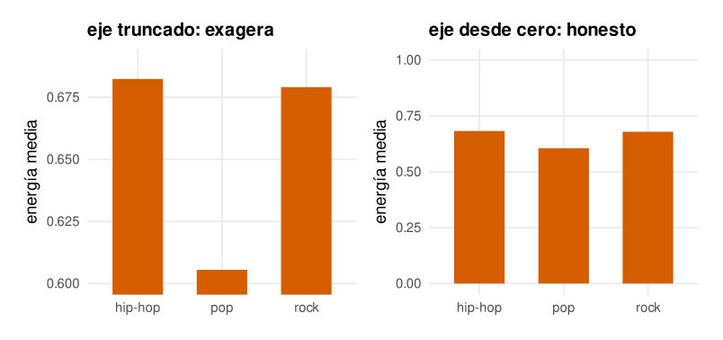
El color al servicio del dato
El color es a la vez la codificación más llamativa y la peor leída, y merece cautela. Dos reglas. La primera, funcional: use color para distinguir categorías (cualitativo) o para graduar una magnitud (secuencial), pero no para lo que la posición ya dice mejor. La segunda, de accesibilidad: cerca de uno de cada doce hombres no distingue bien el rojo del verde, así que una paleta que dependa de esa diferencia excluye a mucha gente. La solución es usar paletas diseñadas para ser inequívocas también en visión daltónica; la de Okabe-Ito (Okabe y Ito 2008) —ocho colores distinguibles por casi todo el mundo— es el estándar, y es la que usan todas las figuras de este capítulo y de este libro. La accesibilidad no es un extra: un gráfico que una parte del público no puede leer es un gráfico a medias.
Hay, además, una tercera regla que decide entre aciertos y desastres: el tipo de paleta debe corresponder al tipo de la variable, y confundirlos es uno de los errores de color más frecuentes. Las variables categóricas sin orden —el género, el país, el partido— piden una paleta cualitativa: colores distintos y equidistantes, ninguno «más» que otro, como los de Okabe-Ito; usar aquí una gama de claro a oscuro sugeriría una jerarquía que no existe. Las variables numéricas que van de poco a mucho —una temperatura, una densidad, un recuento— piden una paleta secuencial: un solo tono que gradúa de claro a oscuro, donde más oscuro es más, y el ojo lee el orden sin esfuerzo. Y las variables que tienen un centro con significado —una correlación (cero), un cambio porcentual (sin cambio), un error (acierto)— piden una paleta divergente: dos tonos que salen de un neutro central hacia dos extremos opuestos, de modo que el signo se ve por el color y la magnitud por la intensidad. El mapa de calor de correlaciones de este capítulo usa una divergente centrada en cero justamente por eso: pintar la correlación con una secuencial de claro a oscuro escondería la diferencia entre \(+0{,}5\) y \(-0{,}5\), que es la que más importa. La regla es fácil de recordar y de olvidar: categórica sin orden, cualitativa; numérica que crece, secuencial; numérica con centro, divergente. Elegir el tipo equivocado no es un desliz estético, sino una mentira sobre la naturaleza del dato.
Y un último matiz, del que casi nadie habla pero que separa los gráficos cuidados de los toscos: no todo lo que se puede colorear debe colorearse. El color es un recurso escaso —el ojo solo distingue con comodidad seis o siete categorías cromáticas a la vez—, así que gastarlo en algo que la posición ya dice, o repartirlo entre quince categorías indistinguibles, es malgastarlo. La disciplina de color de un buen gráfico es de sustracción, no de adición: empezar en blanco y negro y añadir color solo donde aporta —para separar lo que debe compararse, para resaltar lo que importa—, no al revés. Un gráfico con tres colores bien elegidos comunica más que uno con doce, igual que un texto con tres palabras subrayadas guía mejor que uno con la mitad en negrita.
La gramática de gráficos: ggplot2
Aquí está el corazón del capítulo. La idea de Wilkinson (Wilkinson 2005), convertida por Wickham en ggplot2, es que cualquier gráfico estadístico se descompone en capas independientes que se combinan (figura 12.4): unos datos; un mapa estético (aes) que asigna variables a propiedades visuales —qué va al eje \(x\), qué al \(y\), qué al color, al tamaño—; una o más geometrías (geom) que dibujan —puntos, barras, líneas—; posiblemente una transformación estadística (stat) que resume antes de dibujar; las escalas que traducen datos a píxeles y a colores; el sistema de coordenadas; las facetas que parten en paneles; y el tema que gobierna lo no-datos. Un gráfico es una suma de estas piezas, y se escribe, literalmente, sumándolas con +.
Conviene detenerse en por qué esta idea es tan poderosa, porque no es evidente a primera vista y es la clave de todo el capítulo. Un sistema de gráficos «por tipos» —una función para el histograma, otra para las barras, otra para la dispersión— tiene tantas cosas que aprender como tipos de gráfico hay, y cada una con su sintaxis; peor aún, lo que no está en el catálogo no se puede hacer. Una gramática, en cambio, tiene un puñado de piezas y una regla para combinarlas, y de esa combinatoria salen no los veinte gráficos del catálogo, sino todos los gráficos posibles, incluidos los que nadie ha dibujado todavía. Es la misma economía que la del lenguaje: no memorizamos las frases, aprendemos las palabras y la gramática, y con ellas decimos cosas que nunca oímos. Cambiar una sola pieza —la geometría de punto por la de línea, la coordenada cartesiana por la polar, sin tocar nada más— transforma un gráfico en otro, y esa independencia de las piezas es lo que convierte la visualización en un juego de construcción en vez de un menú cerrado. Quien aprende los siete componentes y cómo se combinan no ha aprendido a hacer siete gráficos: ha aprendido a hacer cualquiera, y a inventar los que le falten.
El orden en que se suman las capas tiene, además, una lógica que ayuda a leer y escribir el código: primero los datos y el mapa estético —el cimiento, lo que todas las capas comparten—, luego las geometrías de abajo arriba —lo que se suma antes se dibuja debajo, de modo que un geom_point seguido de un geom_smooth pone la recta sobre los puntos, y al revés los taparía—, y por último los ajustes de escala, faceta y tema que afinan el conjunto. Esa secuencia no es capricho: refleja el modelo mental de construir un gráfico por capas físicas, como quien pinta un cuadro empezando por el fondo. Leer un bloque de ggplot2 de arriba abajo es, literalmente, ver cómo se levanta el gráfico pieza a pieza, y escribirlo es decidir ese orden con intención en vez de por azar.
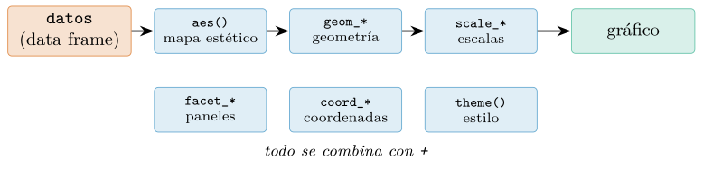
aes, qué variable va a qué propiedad visual), las geometrías que dibujan, las escalas que traducen, las coordenadas, las facetas y el tema. Cambiar una capa —de barras a puntos, de escala lineal a logarítmica— no obliga a rehacer el resto: esa composabilidad es lo que distingue una gramática de un catálogo de funciones.Anatomía de un ggplot
Un gráfico se construye añadiendo capas a un objeto. Se empieza con ggplot(), que recibe los datos y el mapa estético, y se le suman geometrías:
library(ggplot2)
ggplot(musica, aes(x = loudness, y = energy)) + # datos + mapa estetico
geom_point() # geometria: un punto/filaEse aes(x = loudness, y = energy) es el mapa estético: dice «pon loudness en el eje horizontal, energy en el vertical». El geom_point() dibuja un punto por cada fila en esa posición. Y como el gráfico es un objeto, se le pueden añadir más capas sin rehacerlo —otra geometría encima, una escala, un título—:
p <- ggplot(musica, aes(loudness, energy)) + geom_point(alpha = 0.2)
p + geom_smooth(method = "lm") + # una recta de ajuste, encima
scale_x_continuous(name = "volumen (dB)") +
labs(title = "Energía y volumen") + theme_minimal()Nótese que en el segundo bloque alpha = 0.2 va fuera de aes(): es una constante que se aplica a todos los puntos, no una variable que se mapea. Esa distinción —entre lo que depende de los datos, que va dentro de aes, y lo que es una constante, que va fuera— es la fuente de confusión número uno de quien empieza, y le dedicamos enseguida su propio apartado más adelante en esta sección, porque entenderla es entender la mitad de la gramática.
La construcción por capas tiene una ventaja que no se aprecia hasta que se sufre su ausencia: se puede desarrollar un gráfico incrementalmente, viendo el efecto de cada añadido. Se empieza con lo mínimo —los puntos—, y se van sumando piezas mientras se mira el resultado: una recta de tendencia, luego el color por grupo, luego las facetas, luego el pulido. Cada + es un experimento reversible; si una capa no mejora, se quita. Ese diálogo con el gráfico —añadir, mirar, ajustar— es la forma natural de trabajar con ggplot2, y contrasta con los sistemas donde cada cambio obliga a reescribir la llamada entera. El gráfico no se especifica de golpe; se cultiva, capa a capa, y esa maleabilidad es buena parte de por qué la exploración visual en R es tan fluida.
Estadísticas y posiciones
Algunas geometrías dibujan los datos tal cual (geom_point); otras los resumen primero, con una transformación estadística. geom_bar cuenta cuántas filas hay de cada categoría (su stat es count); geom_histogram agrupa en tramos y cuenta; geom_smooth ajusta un modelo. Cuando el dato ya viene resumido —una tabla de medias— se usa geom_col, que dibuja la altura tal cual sin recontar. Y las posiciones resuelven los solapamientos: position = "dodge" pone las barras de un grupo lado a lado, "stack" las apila, "fill" las apila normalizadas a proporción. Esas tres palabras —geometría, estadística, posición— son el vocabulario con el que se especifica qué se dibuja, cómo se resume y dónde se coloca, y su combinación cubre casi todos los gráficos que hacen falta.
Una consecuencia de que la geometría resuma es que a veces se quiere dibujar no la variable original, sino la que la estadística calculó. El histograma, por defecto, pone en el eje vertical la frecuencia —el conteo de cada tramo—, pero para superponerle una curva de densidad hay que llevarlo a la escala de densidad, y eso se pide con after_stat(density): una señal a ggplot2 de «no uses la variable de partida, usa la que el stat produjo». Ese mecanismo —mapear una estética a una variable calculada, no a una del conjunto de datos— es una de las sutilezas que separan al usuario que copia recetas del que entiende la gramática, porque revela que el stat no es un detalle interno, sino un productor de variables nuevas (count, density, ncount) que están ahí para mapearse como cualquier otra. Quien lo interioriza deja de pelearse con el histograma que «no deja» superponer una densidad y entiende que solo estaba mirando la escala equivocada.
Mapear no es fijar
Hay una distinción en el corazón de la gramática que, mal entendida, es la primera fuente de frustración del principiante: la diferencia entre mapear una estética y fijarla. Mapear —dentro de aes()— es decir «que esta propiedad visual dependa de esta variable»: aes(color = track_genre) pide un color por cada género, y ggplot2 elige la paleta y añade la leyenda. Fijar —fuera de aes(), como argumento de la geometría— es decir «que esta propiedad valga esto para todo»: geom_point(color = "blue") pinta todos los puntos de azul, sin leyenda ni variable. La confusión clásica es escribir aes(color = "blue") esperando puntos azules; lo que ocurre es desconcertante y revelador: ggplot2 crea una variable ficticia constante llamada «blue», le asigna el primer color de su paleta (rojo, típicamente) y añade una leyenda que dice «blue». El error no es de sintaxis —el código corre— sino de modelo mental: dentro de aes todo es una variable que se mapea, fuera todo es un valor que se fija. Entender esa frontera —qué va dentro del paréntesis del mapeo y qué fuera— es entender la mitad de la gramática, y no entenderla condena a horas de perplejidad ante gráficos que salen de un color que nadie pidió.
El sistema de coordenadas es la última pieza, y la más fácil de olvidar. Por defecto es el cartesiano —\(x\) horizontal, \(y\) vertical—, pero cambiarlo abre posibilidades: coord_flip() intercambia los ejes (barras horizontales); coord_polar() enrolla el eje en un círculo (y convierte, de hecho, unas barras en una tarta —lo que revela que la tarta no es un tipo de gráfico distinto, sino unas barras en coordenadas polares—); coord_fixed() fuerza la misma escala en ambos ejes, imprescindible cuando las dos variables son comparables (un mapa, dos coordenadas). Que la tarta sea «barras en polares» es más que una curiosidad: enseña que la gramática ve los gráficos como transformaciones de las mismas piezas, no como categorías estancas, y que entender esa unidad es lo que permite inventar gráficos nuevos combinando piezas de formas que nadie catalogó.
Un rodeo: los gráficos base de R
R trae, desde antes de ggplot2, un sistema de gráficos «base» que conviene conocer aunque solo sea para apreciar lo que la gramática mejoró. plot(x, y) dibuja una dispersión, hist(x) un histograma, boxplot(y ~ g) cajas por grupo, y barplot barras. Son rápidos —un vistazo exploratorio de una línea— y no dependen de ningún paquete:
hist(musica$energy) # un histograma de un vistazo
boxplot(energy ~ track_genre, data = musica) # cajas por genero
plot(musica$loudness, musica$energy) # dispersionPero los gráficos base tienen el defecto que ggplot2 vino a curar: cada función es un mundo con su propia sintaxis, y componer —superponer una recta, colorear por grupo, partir en paneles, añadir una leyenda— exige código imperativo distinto en cada caso, sin un modelo común. Añadir una recta a un plot es abline; colorear por grupo es un vector de colores calculado a mano; una leyenda es una llamada aparte con coordenadas manuales. La gramática de ggplot2 sustituye esa colección de funciones ad hoc por un sistema donde todo se compone igual, y por eso, salvo para un vistazo rápido, el trabajo serio de visualización en R usa ggplot2. El sistema base se queda como herramienta de exploración inmediata y como cimiento histórico —la prueba de que la buena idea no fue dibujar, que R siempre supo, sino dibujar con una gramática—.
La historia merece un apunte, porque ilustra cómo progresan las ideas. Los gráficos base de R heredaron el sistema de S, diseñado en los años ochenta cuando dibujar por ordenador era caro y cada gráfico se programaba como una secuencia de órdenes —dibuja los ejes, pon los puntos, añade las etiquetas—. Funcionaba, pero cada tipo de gráfico era un programa distinto. La gramática de Wilkinson, de 1999, propuso mirar los gráficos no como programas sino como estructuras: descomponer cualquiera en las mismas piezas y componerlo declarando qué va dónde, no ordenando paso a paso cómo dibujarlo. Wickham lo llevó a R en 2007 con ggplot2, y el cambio fue tan profundo que hoy cuesta imaginar la visualización sin él. Es un ejemplo de una lección que recorre todo el libro: el salto de calidad rara vez viene de hacer más rápido lo de siempre, sino de encontrar la abstracción correcta —la tubería del cap. 3, la gramática tabular del cap. 8, la de gráficos aquí— que convierte un montón de casos particulares en un sistema. Aprender la abstracción cuesta más que aprender una receta, y rinde infinitamente más.
Comparar magnitudes: el gráfico de barras
La pregunta más común —¿cuál es mayor?— la responde el gráfico de barras, que codifica magnitud con longitud y posición, las dos que el ojo lee mejor. Por eso, pese a su humildad, la barra es probablemente el gráfico más útil que existe: para comparar valores entre categorías —ventas por región, votos por partido, energía por género— ninguno la supera en precisión ni en claridad. La tentación de sustituirla por algo más vistoso —una tarta, un gráfico de burbujas, un mapa de calor— casi siempre empeora la comunicación a cambio de un adorno; la barra, sencilla y poco glamurosa, gana casi todas las veces. Aprender a resistir esa tentación —a preferir la barra correcta al gráfico llamativo— es una de las primeras señales de madurez visual. Para comparar la energía media de los seis géneros, se resume y se dibuja con geom_col (figura 12.5):
musica |> group_by(track_genre) |> summarise(energia = mean(energy)) |>
ggplot(aes(x = reorder(track_genre, energia), y = energia)) +
geom_col() + coord_flip() + # barras horizontales, ordenadas
labs(x = NULL, y = "energía media")Dos detalles que separan un gráfico de barras bueno de uno mediocre. El primero, ordenar: reorder(track_genre, energia) ordena los géneros por su valor en lugar de dejarlos en orden alfabético, y ese simple gesto convierte una maraña en un ranking legible de un vistazo. El segundo, coord_flip() para barras horizontales cuando las etiquetas son largas —se leen mejor en horizontal que giradas—. Para comparar dos dimensiones a la vez —la proporción de contenido explícito por género— se añade una segunda variable al color y se separan las barras con position = "dodge" (figura 12.5, derecha):
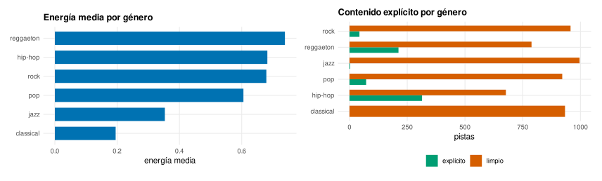
reorder. A la derecha, dos variables a la vez —género y contenido explícito— con barras agrupadas (position = "dodge"): el hip-hop y el reggaetón concentran lo explícito. La barra, que codifica con longitud y posición, es la herramienta precisa para comparar magnitudes.musica |> mutate(explicito = if_else(explicit, "explícito", "limpio")) |>
count(track_genre, explicito) |>
ggplot(aes(track_genre, n, fill = explicito)) +
geom_col(position = "dodge") # barras lado a lado por grupoY una advertencia que ya se ganó su figura: la tarta. Es el gráfico más popular y uno de los peores, porque codifica con ángulos y áreas —las codificaciones que el ojo lee con menos precisión (§12.2.1)—. Comparar tres o cuatro porciones de tamaño parecido en una tarta es casi imposible; las mismas cifras en barras se ordenan y comparan sin esfuerzo. La regla es sencilla: donde se piense en una tarta, dibújense barras.
Las tres posiciones de las barras responden a tres preguntas distintas, y elegir mal distorsiona el mensaje. dodge pone las barras de un grupo lado a lado: sirve para comparar los valores absolutos de cada subcategoría (¿cuántas pistas explícitas hay en cada género?). stack las apila: muestra el total y su composición (¿cuántas pistas hay en total, y qué parte es explícita?). Y fill apila normalizando cada barra al 100 %: sirve para comparar proporciones cuando los totales difieren (¿qué fracción de cada género es explícita, independientemente de cuántas pistas tenga?). La misma tabla de datos, tres gráficos que cuentan tres historias; la pregunta manda sobre la posición. Un error común es usar barras apiladas para comparar las subcategorías de arriba: como no comparten una base común, sus longitudes ya no se leen sobre una escala compartida, y la comparación se vuelve tan imprecisa como la de una tarta.
Líneas: la tendencia y el tiempo
Cuando el eje horizontal es una variable ordenada —el tiempo, sobre todo, pero también cualquier magnitud continua sobre la que se sigue algo— el gráfico natural es la línea (geom_line), que une los puntos consecutivos y hace visible la tendencia (figura 12.6). La línea comunica continuidad y dirección: sube, baja, oscila. Es la codificación de posición aplicada a una secuencia, y por eso lee tan bien la evolución. La regla clave: solo se unen con línea puntos que tengan un orden natural —una serie temporal, una curva de respuesta—; unir con línea categorías sin orden (los géneros, por ejemplo) es un error que sugiere una continuidad inexistente.
El caso rey de la línea es la serie temporal, y merece sus propias precauciones porque es el gráfico más frecuente en informes de negocio, ciencia y periodismo. La primera: el tiempo va siempre en el eje horizontal, por convención tan universal que violarla desorienta al lector antes de que empiece a leer. La segunda: R distingue las fechas de los números, y usar el tipo correcto (una columna Date) permite a scale_x_date() etiquetar el eje con sensatez —meses abreviados, años, trimestres— y respetar la duración real entre puntos, de modo que un hueco de dos meses se ve como el doble de ancho que uno de uno; tratar las fechas como texto o como enteros pierde eso y espacia mal los puntos. La tercera, sobre varias series a la vez: cuando se comparan tres o cuatro líneas, el color las distingue, pero conviene etiquetar cada línea directamente en su extremo derecho en vez de recurrir a una leyenda, para que el ojo no tenga que emparejar colores con nombres en un ir y venir constante. Y una cuarta, sobre la honestidad: en una serie temporal, a diferencia de las barras, el eje vertical no tiene por qué empezar en cero —lo que la línea codifica es el cambio, la pendiente, no la magnitud absoluta desde el origen—, y forzar el cero puede aplastar una variación pequeña pero importante; la regla del cero, tan firme para las barras, no se traslada a las líneas, y confundirlas es un error en ambos sentidos.
Una variante útil de la línea es el área, que rellena el espacio bajo ella (geom_area): enfatiza el volumen acumulado, la «cantidad total» bajo la curva, y sirve cuando esa magnitud —no solo la tendencia— es el mensaje. Apilando varias áreas (position = "stack") se ve cómo un total se reparte entre componentes a lo largo del tiempo, el equivalente temporal de las barras apiladas. Como con estas, la advertencia se mantiene: solo la banda de abajo descansa sobre una base plana y se lee con precisión; las de arriba flotan sobre las inferiores y su grosor es más difícil de comparar entre instantes.
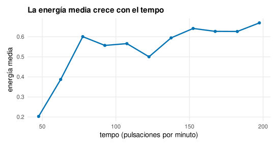
Ver una distribución: histograma, caja, violín, ECDF
Para una variable numérica, la pregunta es cómo se reparte, y hay cuatro formas de asomarse, cada una con su virtud. El histograma agrupa en tramos y cuenta, mostrando la forma completa —dónde está la masa, si hay una joroba o dos, si está sesgada—; superponerle una densidad suaviza esa forma (figura 12.7):
ggplot(musica, aes(energy)) +
geom_histogram(aes(y = after_stat(density)), bins = 30) +
geom_density() # la curva suave, encima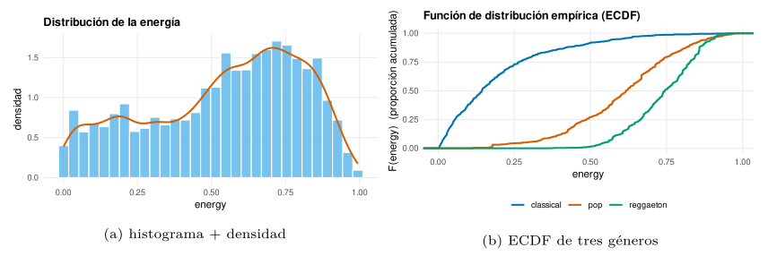
El número de tramos (bins) del histograma es una decisión con consecuencias: pocos tramos ocultan la forma, demasiados la fragmentan en ruido. Por eso existe una alternativa sin parámetros, la función de distribución empírica (ECDF), que para cada valor dibuja la proporción de datos por debajo (stat_ecdf): no hay bins que elegir, no hay suavizado que engañe, y comparar grupos es superponer curvas (figura 12.7b). Para comparar la distribución entre grupos, el diagrama de caja (cap. 11) resume cada grupo en cinco números, y el violín le añade la forma —el ancho del violín es la densidad—; superponerlos da lo mejor de ambos, la forma del violín con los cuartiles de la caja (figura 12.8):
ggplot(musica, aes(reorder(track_genre, energy, median), energy)) +
geom_violin() + geom_boxplot(width = 0.18) + coord_flip()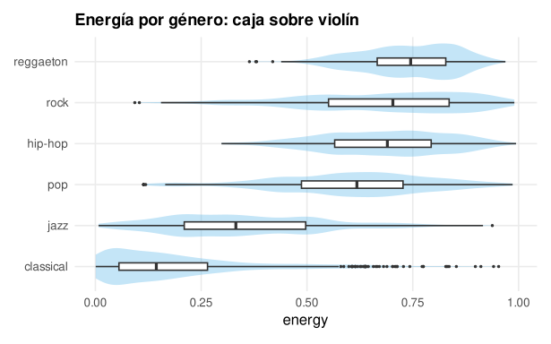
Con pocos datos por grupo, ni la caja ni el violín son de fiar —resumen lo que apenas hay—, y conviene mostrar los puntos individuales. Pero apilarlos en una línea los solapa; la solución es el jitter, un pequeño desplazamiento aleatorio (geom_jitter) que los separa sin mentir sobre su valor, o el gráfico de enjambre (beeswarm), que los coloca sin solapamiento. Superponer los puntos a una caja semitransparente da lo mejor: el resumen y el dato crudo a la vez, de modo que se ve tanto la mediana como si el grupo tiene tres observaciones o trescientas. La regla general de las distribuciones: cuantos menos datos, más cerca hay que estar del punto individual; cuantos más, más conviene resumir. El histograma y el violín brillan con miles; con decenas, muéstrense los puntos, porque un violín de quince observaciones dibuja una forma que el azar inventó.
Y una advertencia sobre el gráfico de distribución más querido y más traicionero, la densidad: su suavidad depende de un parámetro (el ancho de banda) tan arbitrario como los bins del histograma, y un ancho mal elegido inventa jorobas que no existen o borra las que sí. La densidad es una interpretación, no un dato; el histograma, al menos, muestra los recuentos reales. Ante la duda entre ambos, o se prueban varios anchos, o se recurre a la ECDF, que no suaviza nada.
Para comparar la distribución de una variable entre grupos, superponer las densidades es más revelador que apilar histogramas: cada grupo una curva, con transparencia para que se vean los solapes (figura 12.9). Y cuando los grupos son muchos, el gráfico de crestas (ridgeline, del paquete ggridges) apila las densidades escalonadas en vertical, una idea que exprime el espacio y deja comparar una docena de distribuciones de un vistazo. El panel derecho de la figura 12.9, por su parte, muestra el otro extremo del consejo anterior: con solo veinticinco pistas por género, en vez de fiarse de la caja se dibujan los puntos con jitter sobre una caja tenue, de modo que se ve a la vez el resumen y cuántas observaciones lo sostienen.
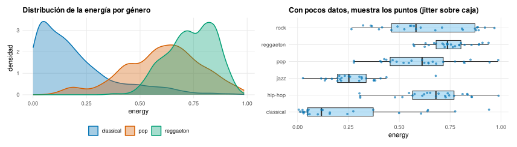
Relacionar: dispersión y sobreimpresión
Para dos variables numéricas, la pregunta es cómo se relacionan, y la respuesta es el diagrama de dispersión (scatter plot): un punto por observación, posición según las dos variables —las codificaciones más precisas—. Es, no por casualidad, el gráfico que usó Anscombe para desmontar los resúmenes: nada revela la forma de una relación como ver los puntos. Una nube ascendente delata una correlación positiva; una descendente, negativa; una curva, una relación no lineal que la correlación de Pearson (cap. 11) no captaría; un abanico que se ensancha, una varianza que crece con la magnitud. Todo eso está en el número de la correlación de forma comprimida y ambigua, y en la dispersión de forma inmediata y honesta. La regla de oro que se deriva: nunca informes de una correlación sin haber mirado antes su diagrama de dispersión —el número puede ocultar una curva, un atípico o dos nubes separadas que fingen una relación que no existe—. Con una capa de suavizado (geom_smooth) encima, se ve la tendencia (figura 12.10):
ggplot(musica, aes(loudness, energy)) +
geom_point(alpha = 0.2) + # transparencia vs amontonamiento
geom_smooth(method = "lm") # la recta de ajuste con su banda
geom_hex (der.) agrupa en hexágonos y colorea por cuántos caen en cada uno, revelando dónde se concentran de verdad. Con muchos datos, la transparencia o el binning sustituyen al punto sólido.Con miles de puntos aparece el amontonamiento (overplotting): tantos puntos se solapan que forman una mancha uniforme donde no se distingue si hay diez o mil observaciones. Dos remedios. La transparencia (alpha) deja ver la densidad —donde se amontonan, el color se satura—. Y para volúmenes mayores, agrupar el plano en celdas y colorearlas por cuántos puntos caen: geom_hex usa hexágonos, geom_bin2d rectángulos (figura 12.10, derecha). El punto sólido funciona con cientos de observaciones; con miles, hay que dejar hablar a la densidad.
La capa de suavizado (geom_smooth) merece más que una mención de paso, porque encierra una decisión que cambia el mensaje. Por defecto, con menos de mil puntos, ggplot2 ajusta una curva loess —una regresión local flexible que sigue las ondulaciones de los datos—; con más, una spline (un modelo aditivo, más barato de ajustar a ese tamaño). Pero uno puede pedir explícitamente method = "lm" para una recta, y la diferencia no es cosmética: la recta impone la hipótesis de que la relación es lineal y la resume en una pendiente; el loess no impone nada y deja que los datos dibujen su forma, revelando curvaturas, mesetas o codos que la recta borraría. La elección es, en el fondo, la misma tensión de todo el análisis: la recta es más simple y más fácil de comunicar, pero puede mentir si la relación no es lineal; el loess es más fiel, pero más difícil de resumir en una frase. La banda gris que rodea la curva —el intervalo de confianza del cap. 11, ahora dibujado— añade la honradez de mostrar la incertidumbre: donde hay pocos datos, la banda se ensancha y avisa de que la tendencia ahí es una conjetura. Un suavizado sin su banda esconde cuánto hay que fiarse de él.
Y una advertencia que no es de dibujo sino de lectura, aunque el gráfico la hace tan tentadora que conviene grabarla aquí: una nube ascendente y una recta con pendiente positiva muestran que dos variables covarían, no que una cause la otra. El diagrama de dispersión es la prueba visual de la correlación, y la correlación —se dijo en el cap. 11— no es causalidad. Que la energía suba con el volumen no dice cuál empuja a cuál, ni si un tercer factor —la producción moderna, el género— mueve a las dos a la vez. El gráfico invita con fuerza a la conclusión causal, porque la recta parece contar una historia de causa y efecto; resistir esa invitación, y escribir «se relacionan» donde la tentación pedía «hace que», es parte de la honradez visual tanto como el eje desde cero. El gráfico más honesto del mundo no protege de una lectura deshonesta.
Cuando las variables son muchas, la pregunta se vuelve «¿cuáles se relacionan con cuáles?», y la respuesta es el mapa de calor de correlaciones (correlation heatmap): una rejilla con todos los pares de variables, cada celda coloreada según su correlación (figura 12.11). Se calcula la matriz con cor, se pasa a formato largo y se dibuja con geom_tile:
m <- cor(select(musica, energy, loudness, danceability, valence, acousticness))
as.data.frame(as.table(m)) |> # matriz -> formato largo
ggplot(aes(Var1, Var2, fill = Freq)) + geom_tile() +
scale_fill_gradient2(low = "#0072B2", mid = "white", high = "#D55E00")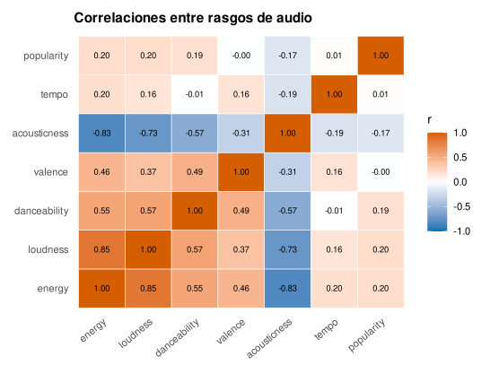
scale_fill_gradient2, centrada en cero, es la correcta cuando el punto medio tiene significado —aquí, la ausencia de correlación—.El detalle que hace honesto este gráfico es la escala de color divergente: como la correlación va de \(-1\) a \(+1\) con un cero significativo en medio, scale_fill_gradient2 usa dos colores que se encuentran en blanco en el cero, de modo que el color codifica a la vez el signo y la fuerza. Usar una escala secuencial (de claro a oscuro) para una variable con cero central engañaría, sugiriendo que \(-0{,}8\) y \(+0{,}8\) están lejos cuando son igual de fuertes en sentidos opuestos. Elegir bien la escala de color —secuencial para magnitudes de un solo sentido, divergente para las que tienen centro— es otra decisión de honradez, como el eje desde cero de las barras.
Pequeños múltiplos: las facetas
Una de las ideas más potentes de la visualización —los pequeños múltiplos de Tufte— es repetir el mismo gráfico para cada valor de una variable, en una rejilla de paneles idénticos en escala y forma. El ojo compara paneles con facilidad porque solo cambia lo que interesa. En ggplot2 es una capa más, facet_wrap (figura 12.12):
ggplot(musica, aes(valence, energy)) +
geom_point(alpha = 0.3) + geom_smooth(method = "lm") +
facet_wrap(~ track_genre) # un panel por genero, misma escala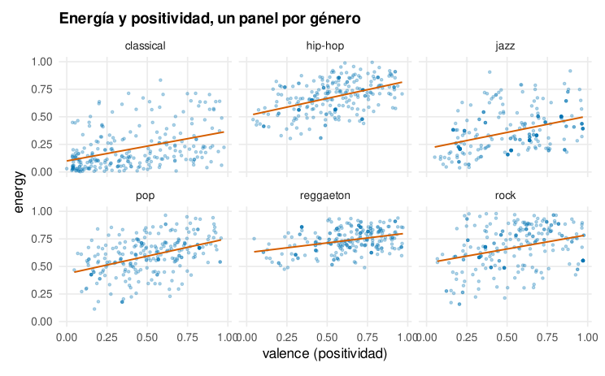
valence), un panel por género, todos con la misma escala. La rejilla revela lo que un solo gráfico apelmazado escondería: la relación es plana en unos géneros y creciente en otros, y la clásica ocupa una esquina que ningún otro pisa. Una capa —facet_wrap— convierte un gráfico en seis comparables.La virtud de las facetas es que la comparación es honesta por construcción: todos los paneles comparten ejes, así que las diferencias que se ven son reales, no artefactos de escalas distintas. facet_wrap(~ var) envuelve los paneles en una rejilla; facet_grid(fila ~ columna) los cruza por dos variables, una en filas y otra en columnas. Es la respuesta de ggplot2 a «¿y esto cómo cambia según…?»: no un gráfico recargado con todo a la vez, sino muchos gráficos simples, comparables de un vistazo.
Una decisión acompaña siempre a las facetas: si los ejes son fijos o libres. Por defecto, todos los paneles comparten escala (scales = "fixed"), y esa es casi siempre la elección correcta, porque es lo que hace la comparación honesta —una barra alta en un panel es realmente más alta que una baja en otro—. Solo cuando las magnitudes de los paneles difieren tanto que con escala común los pequeños quedan aplastados tiene sentido liberar los ejes (scales = "free_y"), y entonces hay que advertirlo, porque el lector, acostumbrado a comparar posiciones entre paneles, se equivocará si no se le avisa de que las escalas cambian. Las escalas libres resuelven un problema de legibilidad a cambio de crear uno de comparación: un intercambio que solo compensa cuando de verdad interesa la forma de cada panel, no el nivel. La regla por defecto —ejes fijos— protege la virtud principal de los pequeños múltiplos, que es que lo que se ve entre paneles es real.
Merece detenerse en la diferencia entre las dos funciones de faceta, porque elegir mal es un tropiezo común. facet_wrap(~ var) toma una variable y reparte sus niveles en una rejilla compacta que se envuelve por filas —seis géneros en dos filas de tres, por ejemplo—, ajustando la forma de la rejilla al número de paneles; es la elección natural para partir por una sola variable categórica. facet_grid(fila ~ columna), en cambio, cruza dos variables en una matriz: cada fila un nivel de la primera, cada columna un nivel de la segunda, y cada celda la combinación. La diferencia no es cosmética: la rejilla de facet_grid tiene significado en sus dos ejes —moverse a la derecha cambia una variable, hacia abajo la otra—, lo que permite leer interacciones («¿el efecto del tempo sobre la energía cambia según el género y según si es explícito?») que ninguna otra disposición muestra tan claramente. La regla: una variable de partición, facet_wrap; dos que se cruzan, facet_grid. Y un detalle que pulen los buenos gráficos: las etiquetas de los paneles —el nombre del nivel en la banda gris— se controlan con el argumento labeller, que puede mostrar «género: pop» en vez de solo «pop», o traducir códigos a nombres legibles, esos toques que separan la rejilla descuidada de la que se lee sin fricción.
Escalas, color y tema
Las escalas traducen los datos a lo visible, y controlarlas es controlar el gráfico. Hay una escala por cada estética —una para \(x\), otra para \(y\), otra para el color, otra para el tamaño—, y cada una decide cómo se reparte ese rango de datos sobre su rango visual. scale_y_log10() pone el eje en logaritmos —imprescindible para magnitudes que abarcan órdenes de magnitud, como la duración de las pistas o la renta: en escala lineal el 90 % de los puntos se apelmaza abajo y los pocos grandes estiran el eje, mientras que en logaritmos cada factor de diez ocupa el mismo espacio y la forma se revela—. scale_x_continuous(limits =, breaks =) fija el rango y las marcas; scale_x_date() entiende fechas y las etiqueta con sensatez (meses, años); y las escalas de color asignan la paleta. Para colorear por una categoría con la paleta accesible de Okabe-Ito (figura 12.13):
okabe <- c("#0072B2","#D55E00","#009E73","#E69F00","#CC79A7","#56B4E9")
ggplot(musica, aes(acousticness, energy, color = track_genre)) +
geom_point(alpha = 0.6) +
scale_color_manual(values = okabe) # paleta apta para daltonicos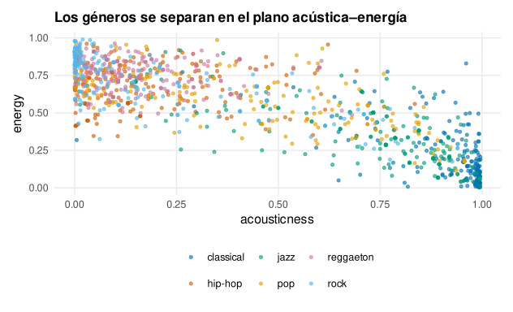
Transformar la escala, no los datos
Una distinción sutil pero importante separa transformar los datos de transformar la escala. Si uno calcula log10(duracion) y dibuja esa columna nueva, el eje mostrará números como 2,4 o 3,1 —logaritmos— que nadie sabe leer: ¿cuántos segundos es 2,7? Si en cambio uno deja los datos en su unidad original y aplica scale_x_log10(), ggplot2 comprime el eje logarítmicamente pero etiqueta con los valores reales —100, 1000, 10 000—, de modo que el lector ve la unidad que entiende sobre un eje que revela la forma. La regla es clara: transforma la escala, casi nunca los datos; la escala es un asunto de presentación, y ggplot2 la trata como tal, dejando el dato intacto y cambiando solo cómo se reparte sobre el papel.
Las transformaciones útiles son un puñado. La logarítmica (scale_x_log10, scale_y_log10) es la reina: para cualquier magnitud que abarque órdenes de magnitud —rentas, poblaciones, duraciones, precios— convierte una nube apelmazada contra el eje en una recta legible, y transforma las relaciones multiplicativas («el doble», «diez veces más») en distancias iguales, que es como la mente compara proporciones. La raíz cuadrada (scale_y_sqrt) es su prima suave, útil para conteos. Y la de invertir (scale_y_reverse) pone el mayor abajo, como piden algunos convenios (un ranking, una clasificación). Junto a la transformación va el formato de las marcas: el paquete scales da funciones como label_percent(), label_comma() o label_dollar() que ponen el separador de miles, el símbolo de porcentaje o la moneda directamente en el eje, ahorrando al lector la aritmética mental y evitando el feísimo eje con notación científica (1e+05) que ggplot2 pone por defecto en los números grandes. Un eje bien formateado —valores reales, separador de miles, unidad explícita— es una cortesía barata que distingue el gráfico profesional del descuidado.
El tema (theme) gobierna todo lo que no son los datos: la tipografía, las líneas de la cuadrícula, el fondo, la posición de la leyenda. Los temas predefinidos dan un punto de partida —theme_minimal() quita el fondo gris y deja respirar el dato, theme_classic() imita el gráfico de revista científica—, y theme(...) ajusta cualquier detalle. La filosofía de Tufte guía la elección: maximizar la proporción tinta/dato, quitar todo lo que no informe —bordes, rejillas densas, fondos de color, decoración—, para que la tinta que queda sea la que dibuja los datos. Un gráfico bien tematizado no es el más adornado, sino el más despojado: el que ha borrado todo lo que distraía de lo único que importa. La figura 12.14 viste el mismo histograma con tres temas: el gris por defecto de ggplot2 (con su fondo, útil para exploración pero cargado para imprimir), el minimalista (fondo blanco, rejilla tenue) y el clásico (solo los ejes, al estilo de una revista científica). El dato es idéntico; lo que cambia es cuánta tinta no-dato lo rodea, y esa elección se hace según dónde vaya el gráfico —la pantalla tolera más adorno que el papel, un informe técnico pide más sobriedad que una diapositiva—.
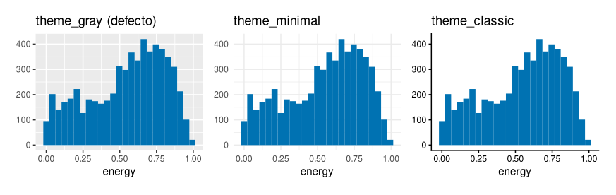
theme_gray (el defecto, con fondo), theme_minimal (fondo blanco, rejilla tenue) y theme_classic (solo ejes). El dato no cambia; cambia la tinta no-dato que lo acompaña. Elegir el tema es decidir cuánto silencio poner alrededor del dato, y la respuesta depende del destino: menos adorno cuanto más serio el contexto.Un tema propio, aplicado a todo
Los temas predefinidos son un buen punto de partida, pero en cuanto uno produce más de un puñado de gráficos —para un informe, un libro, una organización— aparece la necesidad de que todos compartan un aspecto: la misma tipografía, el mismo tratamiento de la rejilla, la misma posición de la leyenda, para que el conjunto se lea como una voz y no como un coro desafinado. La solución elegante no es repetir las mismas veinte líneas de theme() en cada gráfico —que además se desincronizan en cuanto se cambia una—, sino definir el tema una vez y aplicarlo a todos. Un tema es un objeto de R como cualquier otro: se puede guardar en una variable, sumarle ajustes, y fijarlo como predeterminado de la sesión con theme_set(), de modo que todo gráfico posterior lo herede sin mencionarlo. Todas las figuras de este capítulo comparten un tema así —minimalista, con la leyenda abajo y la rejilla menor borrada—, definido una sola vez al principio del script:
tema <- theme_minimal(base_size = 11) +
theme(panel.grid.minor = element_blank(), # sin rejilla menor
plot.title = element_text(face = "bold"), # titulo en negrita
legend.position = "bottom") # leyenda abajo
theme_set(tema) # a partir de aqui, TODO grafico lo heredaEsa costumbre —el tema como decisión de diseño tomada una vez y reutilizada— es lo que da coherencia visual a un trabajo, y es la razón de que las publicaciones y las organizaciones cuidadosas tengan su propio tema de ggplot2, tan reconocible como su tipografía o su logotipo. La gramática hace fácil lo que en otras herramientas exigiría un manual de estilo y disciplina manual: aquí el estilo es código, se define una vez y se aplica solo, y cambiarlo en un sitio lo cambia en todas partes. La coherencia deja de depender de la memoria del autor y pasa a estar garantizada por la máquina, que es donde deben vivir las reglas que no queremos olvidar.
Comunicar: del gráfico exploratorio al de presentación
Hay dos clases de gráfico, y confundirlas cuesta caro. El exploratorio es para uno mismo, rápido y feo, hecho para descubrir: da igual que no tenga título si revela la forma. El de presentación es para otros, y su trabajo no es mostrar los datos, sino comunicar una idea: exige título que diga la conclusión, ejes etiquetados en lenguaje llano, lo importante resaltado y lo demás en gris, anotaciones que guíen la lectura (figura 12.15). El mismo dato, dos gráficos distintos según para quién:
ggplot(d, aes(reorder(track_genre, e), e, fill = destacado)) +
geom_col() +
scale_fill_manual(values = c("grey70", "#D55E00"), guide = "none") +
geom_text(aes(label = round(e, 2)), hjust = -0.15) + # el numero, al lado
coord_flip() +
labs(title = "El reggaetón lidera en energía", # titulo = CONCLUSION
subtitle = "energía media por género (0–1)", x = NULL, y = NULL)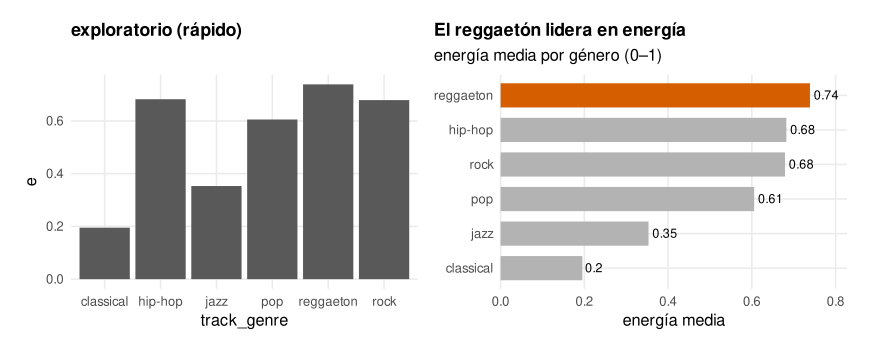
La diferencia decisiva está en el título. Un título descriptivo —«Energía media por género»— obliga al lector a sacar él la conclusión; un título afirmativo —«El reggaetón lidera en energía»— se la da, y usa el gráfico como prueba. En un informe o una presentación, cada gráfico debería tener una única idea que transmitir, y el título debería ser esa idea. El resto del diseño —el orden, el resaltado, las anotaciones— existe para conducir el ojo hasta ella sin esfuerzo. Un gráfico de presentación que hay que estudiar ha fallado; el bueno se entiende en el tiempo que se tarda en leer su título.
Otra herramienta del gráfico de presentación es la anotación: marcar sobre el propio gráfico la región, el punto o la tendencia que importa, para que el ojo vaya directo. La función annotate() añade texto, flechas, rectángulos o líneas en coordenadas de los datos, sin necesidad de una tabla aparte (figura 12.16):
ggplot(sub, aes(loudness, energy)) + geom_point(alpha = 0.2, color = "grey50") +
annotate("rect", xmin = -8, xmax = 0, ymin = 0.8, ymax = 1.02, alpha = 0.12) +
annotate("text", x = -4, y = 0.6, label = "fuerte y enérgico") +
annotate("segment", x = -4, y = 0.64, xend = -4, yend = 0.79,
arrow = arrow(length = unit(2, "mm")))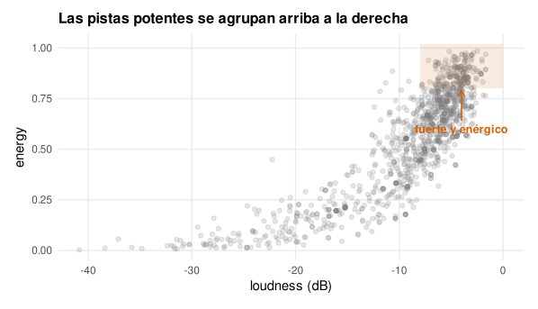
La regla de la anotación es la de la moderación: una o dos, sobre lo verdaderamente importante. Un gráfico cubierto de flechas y cajas vuelve a ser ilegible, solo que por exceso en vez de por defecto. La anotación es un foco, y un foco que ilumina todo no ilumina nada. Bien usada —una etiqueta directa sobre la línea en vez de una leyenda aparte, una flecha al único punto que rompe el patrón— es lo que separa un gráfico competente de uno que se recuerda.
Una técnica de presentación merece nombre propio: el etiquetado directo. Una leyenda obliga al ojo a viajar de ella al gráfico y volver, emparejando colores con nombres, un ir y venir que cansa cuanto más categorías hay. Poner la etiqueta sobre el elemento —el nombre del género al final de su línea, junto a su nube de puntos— elimina ese viaje: el ojo lee el qué donde está el dato. Es más trabajo de código (a menudo con ggrepel para que las etiquetas no se pisen, como en el integrador), pero el resultado se lee sin esfuerzo. Y el color como resaltador es su compañero: en vez de dar a cada categoría un color —que reparte la atención por igual—, se pinta en gris todo salvo lo que importa, que va en color. El ojo va directo a lo destacado, y el resto queda como contexto sin distraer. Etiquetar donde está el dato y colorear solo lo que importa son dos gestos pequeños que transforman un gráfico correcto en uno que comunica de un vistazo.
Contar una historia con datos
Los gestos anteriores —título-conclusión, resaltado, etiquetado directo, anotación— no son trucos sueltos: son las herramientas de un oficio con nombre propio, la narrativa con datos (data storytelling), que consiste en usar los gráficos no para volcar información sino para llevar a una audiencia por un camino hasta una idea. La diferencia con el gráfico exploratorio es de propósito, y cambia todas las decisiones. El exploratorio responde a «¿qué hay en estos datos?» y su virtud es no prejuzgar: muestra todo, para que el analista descubra. El narrativo responde a «¿qué quiero que esta persona entienda y recuerde?» y su virtud es elegir: descarta lo que no sirve a esa idea, ordena lo que la sostiene, resalta el punto en que culmina. Un gráfico narrativo es, en ese sentido, una argumentación: tiene una tesis (el título), unas pruebas (los datos dibujados) y una conducción del ojo (el diseño) que lleva de las segundas a la primera sin que el lector se pierda.
De ahí una serie de decisiones que el analista novato no toma y el experto sí. La primera es de recorte: un gráfico narrativo casi siempre muestra menos que el exploratorio del que nació, porque cada elemento que no empuja hacia la idea la debilita. Quitar series secundarias, colapsar categorías irrelevantes, acotar el eje al tramo que importa —sin truncarlo tramposamente— son actos de generosidad con el lector, no de pereza. La segunda es de secuencia: cuando la historia no cabe en un gráfico, se cuenta en varios, y su orden importa tanto como en un texto —se empieza por el contexto que sitúa, se sigue por el hallazgo que sorprende, se cierra por la implicación que mueve a actuar—. La tercera es de lenguaje: los ejes, las leyendas y las anotaciones se escriben en las palabras del que lee, no en los nombres de las columnas del conjunto de datos; track_genre es para el código, «género musical» para el lector, y esa traducción, humilde como parece, es la diferencia entre un gráfico que habla y uno que obliga a descifrar.
Nada de esto autoriza a manipular. La frontera entre contar una historia y falsearla es exactamente la de la honradez de este capítulo: recortar para aclarar es legítimo; recortar para esconder lo que contradice la tesis, no. Resaltar el dato clave es guiar; inventar una tendencia con un eje truncado es mentir. La narrativa con datos es poderosa precisamente porque el gráfico persuade antes de que la razón intervenga, y ese poder obliga a una disciplina: la historia que se cuenta ha de ser la que los datos cuentan, no la que uno querría que contaran. El buen narrador de datos no es el que hace que los números digan lo que le conviene, sino el que encuentra lo que de verdad dicen y lo cuenta de forma que se entienda y se recuerde. Esa es la meta a la que sirven todas las técnicas del capítulo, y la que separa al que informa del que embauca.
Interactividad y tablas de presentación
Para la web, un gráfico puede volverse interactivo sin reescribirlo: plotly::ggplotly(p) toma cualquier ggplot y lo convierte en un gráfico con zoom, desplazamiento y etiquetas al pasar el ratón, sobre el mismo motor Plotly.js que usan otros lenguajes (Sievert 2020). Es la interactividad casi gratis: se diseña el gráfico con la gramática de siempre y una función lo lleva al navegador.
p <- ggplot(musica, aes(loudness, energy, color = track_genre)) + geom_point()
plotly::ggplotly(p) # interactivo en el navegadorLa interactividad es seductora, y por eso conviene un aviso: ayuda cuando el lector necesita explorar —muchos puntos que quiere inspeccionar uno a uno, series largas donde hacer zoom a un tramo, un conjunto que cada usuario mirará con preguntas distintas—, pero estorba cuando el objetivo es comunicar una conclusión concreta. Un gráfico de presentación tiene una idea que transmitir, y la mejor forma de transmitirla es un gráfico estático bien compuesto que la muestre de golpe, no uno interactivo que obligue al lector a descubrirla pinchando. La interacción traslada trabajo al que mira, y ese traslado es un regalo cuando el lector quiere hurgar y una carga cuando solo quiere entender. La regla práctica: interactivo para explorar y para paneles que el usuario maneja; estático para contar algo y para el papel, que no admite otra cosa. Añadir interactividad «porque queda moderno» a un gráfico que ya decía su mensaje en estático no lo mejora: lo diluye.
Y no todo se comunica mejor con un gráfico: a veces la herramienta correcta es una tabla, cuando importan los valores exactos y no la forma. El paquete gt (Iannone et al. 2025) construye tablas de presentación —con títulos, notas al pie, formato de números, colores por celda— con la misma filosofía de capas que ggplot2, y es el complemento natural para los números que una figura no debe esconder. La regla para elegir: si la pregunta es «¿qué forma tiene?» o «¿cómo se comparan?», un gráfico; si es «¿cuánto exactamente?», una tabla.
Cuando lo que hace falta no es un gráfico sino muchos, coordinados y actualizables, R ofrece los cuadros de mando (dashboards). Con Shiny se construye una aplicación web interactiva —controles que el usuario mueve, gráficos que responden en vivo—; con Quarto (cap. 1) se publican informes con paneles y pestañas que se regeneran al cambiar los datos. Es el mismo salto que en el cap. 10: del gráfico único hecho a mano al sistema que se recalcula solo. No entra en el alcance de este capítulo —cada uno da para un libro—, pero conviene saber que la gramática de gráficos que hemos aprendido es el ladrillo con el que se construyen: un cuadro de mando no es más que muchos ggplot orquestados, y quien domina la pieza domina medio edificio.
Componer, exportar y reproducir figuras
Un gráfico rara vez viaja solo. En un informe o un artículo se juntan varios en una figura compuesta —cuatro paneles que cuentan una historia, un antes y un después lado a lado—, y ese montaje, que en otras herramientas se hace a mano en un editor de imágenes, en R se hace con código y se regenera solo cuando cambian los datos. El paquete patchwork convierte la composición en aritmética de gráficos: si p1 y p2 son dos ggplot, p1 + p2 los pone lado a lado, p1 / p2 uno encima del otro, y (p1 + p2) / p3 combina ambas disposiciones; se le pueden añadir un título común, una leyenda compartida y etiquetas de panel (A, B, C) con una sola línea. Varias figuras de este capítulo —el cuarteto de temas, el antes-y-después de la comunicación, el factor de mentira— son composiciones de patchwork, y su virtud es la misma que la de toda la gramática: son código, no un archivo de imagen que hay que rehacer a mano cada vez que llega un dato nuevo.
library(patchwork)
(p1 + p2) / p3 + # dos arriba, uno abajo
plot_annotation(title = "Retrato del catalogo",
tag_levels = "A") # etiqueta cada panel: A, B, CTerminado el gráfico, hay que sacarlo de R al mundo, y aquí se cometen errores que arruinan un buen diseño. La función es ggsave(), y su primera decisión es el formato. Un gráfico es, casi siempre, dibujo vectorial —líneas, puntos, texto—, y debe guardarse en un formato vectorial: PDF o SVG, que escalan a cualquier tamaño sin pixelarse y mantienen el texto nítido y seleccionable. Guardar un gráfico como PNG o JPEG —formatos de mapa de bits— lo condena a verse borroso al ampliarlo y a engordar el archivo; el mapa de bits solo se justifica cuando el gráfico tiene decenas de miles de puntos y el vector se vuelve pesado, y aun entonces conviene subir la resolución (dpi = 300 para imprenta). Todas las figuras de este libro se generan como PDF vectorial (device = cairo_pdf), y por eso se ven nítidas a cualquier zoom.
La segunda decisión es el tamaño, y encierra una trampa que sorprende a todos: en ggplot2 el tamaño del texto no escala con el del gráfico. Si uno diseña una figura grande en la pantalla y luego la guarda pequeña para una columna estrecha, las letras que se veían bien se vuelven ilegibles, porque el texto se especifica en puntos absolutos y el gráfico se encoge a su alrededor. La regla, contraintuitiva pero firme: fija en ggsave() el tamaño final —el ancho real que ocupará en la página, en pulgadas o centímetros— desde el principio, y ajusta el base_size del tema a ese tamaño, en vez de diseñar grande y encoger. Un gráfico se compone para el hueco que va a ocupar, no para la pantalla en que se dibuja.
ggsave("figura.pdf", p, width = 16, height = 10, units = "cm", # tamano FINAL
device = cairo_pdf) # PDF vectorial, tipografia incrustadaY hay una tercera cuestión, más profunda: la reproducibilidad. Como la figura es código y no un archivo dibujado a mano, cualquiera con el script y los datos obtiene exactamente la misma imagen, y un cambio en los datos la regenera sin repetir trabajo manual. Esa es la ventaja decisiva de dibujar con código frente a hacerlo en una hoja de cálculo o un editor: no hay un paso manual que rehacer ni que se olvide, no hay una versión antigua que se cuele en el informe final. El gráfico forma parte del análisis reproducible del cap. 1, igual que la limpieza o el modelo, y esa es la razón última por la que un profesional de los datos dibuja programando y no pinchando: no por comodidad, sino porque una figura hecha con código es una figura en la que se puede confiar, que se puede auditar y que se rehace sola cuando el mundo cambia.
El ecosistema: cuando la gramática se queda corta
La gramática de ggplot2 cubre la enorme mayoría de los gráficos estadísticos, pero no todos, y una de sus mayores virtudes es que se puede extender: cientos de paquetes de la comunidad añaden geometrías, escalas y temas nuevos que hablan el mismo idioma de capas, de modo que aprenderlos cuesta poco a quien ya domina la gramática. Conviene conocer el mapa, aunque sea de lejos, para saber qué existe cuando la necesidad aparezca.
Para comparar muchas distribuciones a la vez, ggridges dibuja curvas de densidad solapadas en cascada —una por grupo, escalonadas verticalmente—, una forma elegante de ver cómo se desplaza la forma de una variable a lo largo de decenas de categorías (la evolución de una distribución año a año, el perfil de energía de veinte géneros) sin el amontonamiento que tendrían veinte densidades sobre los mismos ejes (figura 12.17). Su geometría —geom_density_ridges— es una capa más, y hereda todo lo aprendido: se le puede dar color por el propio valor del eje, ordenar los grupos por su mediana, ajustar el solapamiento.
library(ggridges)
ggplot(musica, aes(energy, reorder(track_genre, energy, median))) +
geom_density_ridges(scale = 1.6) # una densidad por genero, en cascada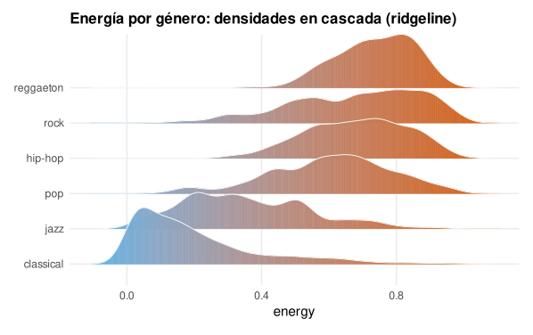
ggridges) que habla el mismo idioma de capas que el resto de la gramática.gganimate convierte una variable en fotogramas y anima la transición, útil en una presentación para mostrar cómo evoluciona algo, aunque en papel siempre haya que volver al pequeño múltiplo. Para muchas variables a la vez, GGally automatiza la matriz de dispersión —cada par de variables en su casilla, dispersiones bajo la diagonal, correlaciones sobre ella, distribuciones en la diagonal—, un solo comando que da la panorámica bivariante completa que el flujo de análisis pedía (figura 12.18). Es el segundo movimiento del flujo visual —cruzar variables de dos en dos— hecho de golpe para todas las parejas, la fotografía panorámica que orienta antes de decidir en qué relación merece la pena detenerse.
library(GGally)
musica |> select(energy, loudness, danceability, acousticness) |>
ggpairs() # todas las parejas: dispersion, correlacion y densidad
ggpairs) condensa el segundo paso del flujo de análisis para todas las parejas a la vez, y salta a la vista la relación fuerte entre energía y volumen frente a la negativa entre energía y acústica. Es la panorámica que orienta antes de escoger dónde mirar de cerca.Y para las estructuras que no son ni una tabla ni una serie, hay ramas enteras del ecosistema. Los datos espaciales —mapas— tienen su propia geometría, geom_sf, que dibuja polígonos geográficos (países, regiones, calles) desde el mismo modelo de capas, coloreando cada territorio por un valor: el mapa coroplético con la gramática de siempre. Las redes —quién se conecta con quién— tienen ggraph, que sitúa nodos y aristas con algoritmos de disposición. No es tarea de este capítulo enseñar cada uno —cada rama da para el suyo—, pero sí dejar la idea de fondo: la gramática de gráficos no es un catálogo cerrado de veinte funciones, sino un lenguaje abierto que la comunidad no ha dejado de ampliar en quince años, y quien aprende su núcleo —datos, estética, geometría, escala, faceta, tema— tiene la llave de todo lo que ese lenguaje ha llegado a decir y de lo que dirá. Aprender ggplot2 no es aprender un paquete; es aprender una forma de construir gráficos que sobrevive a los paquetes concretos.
Un ejemplo integrador: el retrato del catálogo
Reunamos la gramática en un solo gráfico que cuente varias cosas a la vez. Queremos retratar los seis géneros según cómo suenan, cuántas pistas tienen y cuán populares son. La gramática permite mapear cuatro variables a la vez —dos a la posición, una al tamaño, una al color— sin salir del modelo de capas (figura 12.19):
resumen <- musica |> group_by(track_genre) |>
summarise(energia = mean(energy), bailable = mean(danceability),
n = n(), pop = mean(popularity))
ggplot(resumen, aes(energia, bailable)) +
geom_point(aes(size = n, color = pop)) + # tamano=n, color=pop
ggrepel::geom_text_repel(aes(label = track_genre)) + # etiquetas sin pisarse
scale_color_gradient(low = "#56B4E9", high = "#D55E00") +
scale_size_area(max_size = 12)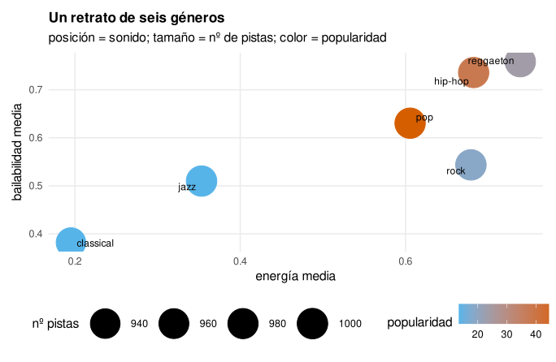
El gráfico es la síntesis del capítulo. Cada variable está en la codificación que su importancia y su naturaleza piden: las dos dimensiones del sonido, que queremos comparar con precisión, van a la posición; el número de pistas, secundario, al tamaño; la popularidad, una graduación, al color. Las etiquetas se colocan solas sin pisarse (ggrepel). Y todo se ha construido sumando capas a un objeto, cambiando una pieza sin tocar las demás. No hemos aprendido a hacer un gráfico de burbujas; hemos aprendido una gramática con la que este gráfico —y cualquier otro— es una frase que se escribe combinando palabras conocidas.
Qué gráfico para qué pregunta
La gramática permite construir cualquier gráfico, pero elegir cuál sigue siendo un juicio, y la pregunta que uno se hace lo decide casi siempre. A modo de brújula:
¿Cuál es mayor? (comparar magnitudes entre categorías) \(\to\) barras ordenadas (
geom_col), horizontales si las etiquetas son largas. Nunca una tarta.¿Cómo se reparte una variable? (una numérica) \(\to\) histograma o densidad para la forma; ECDF si no se quiere elegir tramos; caja o violín para comparar entre grupos.
¿Se relacionan dos variables numéricas? \(\to\) dispersión (
geom_point), con transparencia ogeom_hexsi hay miles de puntos, ygeom_smoothpara la tendencia.¿Cómo cambia algo a lo largo del tiempo? \(\to\) líneas (
geom_line), con el tiempo en el eje horizontal y la escala de fecha adecuada.¿Cómo varía una relación según una tercera variable? \(\to\) facetas (
facet_wrap/grid), pequeños múltiplos con ejes compartidos.¿Qué se relaciona con qué, entre muchas variables? \(\to\) mapa de calor de correlaciones con escala divergente.
¿Cuánto exactamente? (valores precisos) \(\to\) no un gráfico: una tabla (
gt).
La lista no es exhaustiva —hay decenas de tipos de gráfico— pero cubre la inmensa mayoría del trabajo, y su lógica es siempre la misma: identifica qué quieres ver, cuántas variables intervienen y de qué tipo son, y el gráfico casi se elige solo. El error del principiante es al revés: enamorarse de un tipo de gráfico vistoso y forzar los datos en él. La pregunta manda sobre la forma, siempre.
El flujo del análisis visual
La brújula anterior decide un gráfico aislado, pero en la práctica los gráficos no vienen solos: vienen en secuencia, cada uno respondiendo a la pregunta que abrió el anterior. Conviene, por eso, nombrar el flujo —el orden en que un analista despliega figuras cuando se enfrenta a un conjunto de datos nuevo—, porque ese orden es tan importante como cada gráfico suelto y rara vez se enseña.
El primer movimiento es siempre univariante: una variable cada vez, para conocer el terreno. Un histograma o una densidad de cada variable numérica revela su forma —simétrica o sesgada, unimodal o con varios picos, con cola larga o acotada—; un gráfico de barras de las frecuencias de cada variable categórica revela qué niveles hay y cuántos. Es un paso aburrido y tentador de saltar, y saltarlo es un error clásico: es donde aparecen los ceros que en realidad son ausentes, las colas que pedirán una escala logarítmica, las categorías con dos observaciones que no darán para nada. Mirar cada variable a solas antes de cruzarlas es la higiene básica del análisis visual, la contrapartida gráfica del contrato de datos del cap. 10.
El segundo movimiento es bivariante: cruzar dos variables para buscar relaciones. Aquí el tipo de las dos variables decide el gráfico —dos numéricas piden dispersión; una numérica y una categórica, cajas o violines lado a lado; dos categóricas, una tabla de frecuencias o barras agrupadas—, y aquí empiezan a aparecer las historias: la correlación que se sospechaba, el grupo que se comporta distinto, la relación que resulta no ser lineal. El tercer movimiento es multivariante, y es donde la gramática de ggplot2 muestra su músculo: una tercera variable entra por el color, una cuarta por el tamaño, una quinta por las facetas, y un solo gráfico —como el retrato integrador de este capítulo— condensa lo que de otro modo serían cinco figuras. El arte está en no pasarse: más de tres o cuatro codificaciones simultáneas saturan al ojo, y lo que ganó en densidad lo pierde en legibilidad.
El flujo no es rígido —un hallazgo bivariante manda a menudo de vuelta a mirar una variable suelta con otros ojos—, pero su dirección general, de lo simple a lo complejo, de una variable a muchas, es la que ordena una exploración eficaz y la distingue de un manojo de gráficos sueltos hechos al azar. Quien interioriza este flujo deja de preguntarse «¿qué gráfico hago?» ante un conjunto nuevo y empieza por el sitio correcto: una variable, su forma, y desde ahí hacia arriba.
Síntesis: una gramática, no un catálogo
El capítulo defendió una tesis con cada figura: visualizar no es elegir de un catálogo de gráficos prefabricados, sino construir el que hace falta a partir de piezas. Esa es la diferencia entre los gráficos base de R —una función por tipo— y ggplot2 —una gramática—, y es la razón de que R sea, en visualización, tan fuerte. Quien aprende la gramática no aprende a hacer barras, histogramas y dispersiones por separado; aprende un sistema —datos, estética, geometría, estadística, escala, faceta, tema— con el que esos tres y mil más son combinaciones de las mismas palabras.
Bajo la técnica late un mensaje sobre el oficio. Un buen gráfico no es el más vistoso, sino el más honrado y el más claro: honrado en respetar la magnitud de los datos (el eje desde cero, la escala sin trampa) y en ser legible para todos (la paleta accesible); claro en asignar cada variable a la codificación que el ojo lee mejor (posición para lo preciso, color para lo categórico) y en borrar toda la tinta que no informa. La gramática da el poder; los principios —percepción, honestidad, economía— dan el criterio. Con ambos, la visualización deja de ser decoración para convertirse en lo que de verdad es: una forma de pensar con los ojos, la más rápida que tenemos para descubrir lo que los datos esconden y para contárselo a otro. Con los datos ya descritos, inferidos y ahora vistos, el libro entra en su última parte, la del modelado, donde todo lo aprendido se pone al servicio de predecir.
Merece una reflexión final sobre por qué la visualización importa tanto en la ciencia de datos, más allá de que quede bonita. El ser humano procesa lo visual con un ancho de banda que ninguna otra vía iguala: una nube de puntos comunica en un segundo lo que una tabla de mil filas oculta, y un patrón que se ve no hace falta demostrarlo para creerlo. Esa potencia es un arma de doble filo. Bien usada, la visualización es el atajo más rápido del dato a la comprensión y de la comprensión a la decisión; mal usada, es el instrumento de manipulación más eficaz que existe, precisamente porque convence sin pasar por el razonamiento. Un eje truncado, una escala tramposa, un color tendencioso engañan a la intuición antes de que la razón tenga ocasión de protestar. Por eso los principios de este capítulo —la jerarquía perceptual, el factor de mentira, la paleta accesible, la economía de tinta— no son refinamientos estéticos: son ética aplicada. Quien dibuja datos tiene el poder de guiar la mirada de otros, y con él la responsabilidad de guiarla hacia la verdad y no lejos de ella. La gramática de gráficos da el poder; el criterio de usarlo con honradez es lo que convierte a un técnico en un profesional.
Y hay una última idea, más sutil, que este capítulo ha ejercido sin subrayarla: la visualización no es solo para comunicar al final, sino para pensar durante. Los mejores analistas dibujan constantemente mientras trabajan —un histograma para ver la forma, una dispersión para oler una relación, unas facetas para partir un problema—, no porque vayan a enseñar esos gráficos a nadie, sino porque mirar es su forma de razonar sobre los datos. La fluidez de ggplot2, que convierte una idea gráfica en tres líneas, es lo que hace posible ese pensamiento visual continuo: cuando dibujar es barato, se dibuja mucho, y quien dibuja mucho ve lo que quien solo calcula se pierde. Aprender la gramática no es, al final, aprender a hacer figuras para un informe; es adquirir una segunda forma de pensar, la que usa los ojos, y que en el trabajo con datos es a menudo la más rápida en llegar a la verdad.
Errores frecuentes en visualización
Poner una constante dentro de
aes().aes(color = "blue")no pinta de azul: crea una variable ficticia llamada «blue». El color fijo va fuera:geom_point(color = "blue").aesmapea, no fija.Truncar el eje de unas barras. La barra codifica magnitud por su longitud; su eje empieza en cero, siempre. Truncarlo exagera diferencias reales (el factor de mentira).
El gráfico de tarta. Codifica con ángulo y área, las peores. Casi siempre, unas barras ordenadas dicen lo mismo con más claridad.
No ordenar las categorías. Dejarlas en orden alfabético desperdicia el gráfico.
reorderlas ordena por su valor y crea un ranking legible.Amontonamiento sin remedio. Miles de puntos opacos forman una mancha. Transparencia (
alpha),geom_hexogeom_bin2ddevuelven la densidad.Una paleta no accesible. El rojo-verde excluye a uno de cada doce hombres. Usar Okabe-Ito u otra paleta apta para daltonismo.
Demasiada tinta no-dato. Fondos, rejillas densas, bordes, efectos 3D: distraen. Maximizar la proporción tinta/dato (
theme_minimaly despojar).Un título que describe en vez de concluir. En presentación, el título debe ser la idea del gráfico, no su descripción neutra.
Elegir el histograma con
binspor defecto sin mirar. Pocos ocultan, muchos fragmentan. Probar varios, o usar la ECDF, que no tiene ese parámetro.Comparar paneles con escalas distintas. Si las facetas o dos gráficos no comparten ejes, las diferencias que se ven pueden ser del eje, no de los datos.
Una escala secuencial para una variable con centro. La correlación, el cambio porcentual o el error van de negativo a positivo con un cero significativo: piden una escala divergente (
gradient2), no una de claro a oscuro.Resumir grupos minúsculos con violín o densidad. Con pocos datos, la forma que dibujan es ruido. Mostrar los puntos (
geom_jitter), no una curva inventada.Anotar en exceso. Un gráfico cubierto de flechas y cajas es tan ilegible como uno sin ninguna guía. La anotación es un foco: una o dos, sobre lo esencial.
Confiar en la leyenda cuando cabe la etiqueta directa. Una leyenda obliga al ojo a ir y venir emparejando colores con nombres. Con pocas categorías, etiquetar cada serie sobre sí misma (a menudo con
ggrepel) se lee sin ese vaivén.Dibujar densidades sobre histogramas sin escalar. Superponer una curva de densidad a un histograma de frecuencias las pinta en escalas incompatibles; hay que llevar el histograma a densidad (
after_stat(density)) para que convivan.Rotar las etiquetas del eje x cuando bastaba voltear el gráfico. Antes de girar las etiquetas 45 grados para que quepan, prueba
coord_flip: barras horizontales con etiquetas horizontales se leen mucho mejor que verticales con texto inclinado.
Lecturas recomendadas
La teoría que vertebra el capítulo es la gramática de gráficos de Wilkinson (2005), un libro difícil pero fundacional, cuya idea Wickham llevó a la práctica en ggplot2; el libro de ggplot2 (Wickham 2010) y su documentación (Wickham et al. 2025) son la referencia para el uso diario, y conviene tener la segunda siempre a mano. Sobre los principios perceptuales —qué codificaciones lee mejor el ojo—, los trabajos experimentales de Cleveland y McGill (1984; Cleveland 1994) son el origen de todo lo que hoy se da por sabido, y Wilke (2019) los traduce a recomendaciones prácticas y accesibles (su libro es gratuito en la web y ejemplar en claridad). Para la honestidad y la economía gráfica, Tufte (2001) es el clásico insustituible —el que acuñó el factor de mentira y la proporción tinta/dato—, complementado por la mirada más operativa de Few (2009) para cuadros de mando e informes. La accesibilidad del color arranca en Okabe y Ito (2008). Y para aprender ggplot2 con las manos, el libro de Healy (2018) enseña visualización y el paquete a la vez, con el catálogo de casos reales que este capítulo, por espacio, solo pudo insinuar. Quien recorra esas lecturas descubrirá que la visualización tiene tanta teoría detrás como la estadística, y que dominarla —como todo en este libro— es menos cuestión de memorizar funciones que de entender por qué unas decisiones iluminan y otras engañan.
Dos recomendaciones de práctica cierran el capítulo. La primera: aprende ggplot2 recreando gráficos que admires. Cuando veas una figura buena en un artículo o un periódico —el New York Times, el Financial Times y The Economist son escuelas de visualización—, intenta reproducirla con la gramática; el ejercicio enseña más que cualquier tutorial, porque obliga a descomponer un gráfico terminado en sus capas, que es exactamente el pensamiento que la gramática pide. La segunda: cultiva un ojo crítico para los gráficos ajenos. Cada vez que veas uno, pregúntate qué codificación usa, si el eje es honesto, si el color aporta o distrae, si el título concluye o describe. Ese escrutinio, aplicado a los gráficos que uno consume, afila el criterio para los que uno produce, y de paso vacuna contra las manipulaciones visuales que abundan en la prensa y la publicidad. La alfabetización visual —saber leer un gráfico con la misma desconfianza crítica con que se lee una estadística— es hoy una competencia cívica, no solo profesional, y este capítulo aspira a haber puesto sus cimientos: los de producir gráficos honrados y los de no dejarse engañar por los que no lo son.
Con la música ya descrita, inferida y retratada, el análisis exploratorio está completo: sabemos qué hay en los datos, cuánto podemos fiarnos y cómo enseñarlo. Lo que queda es el salto de comprender a predecir —construir modelos que aprendan de estos datos para decir algo de los que aún no hemos visto—, y a ese salto se dedica la última parte del libro.